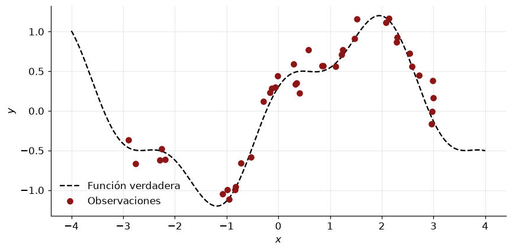
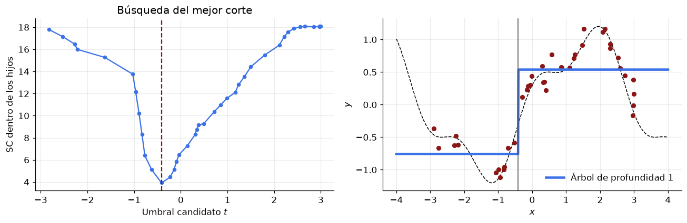
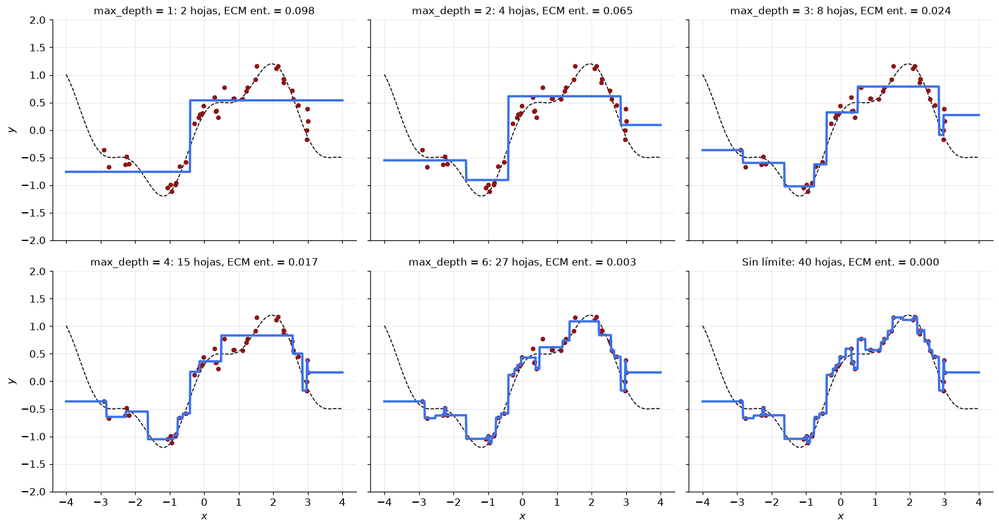
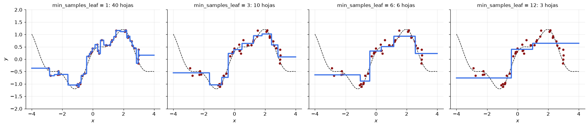
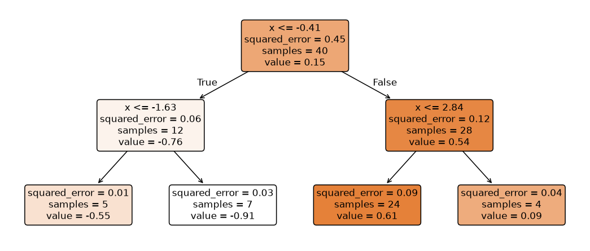
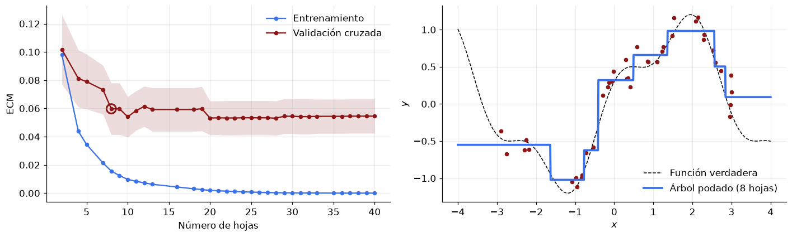
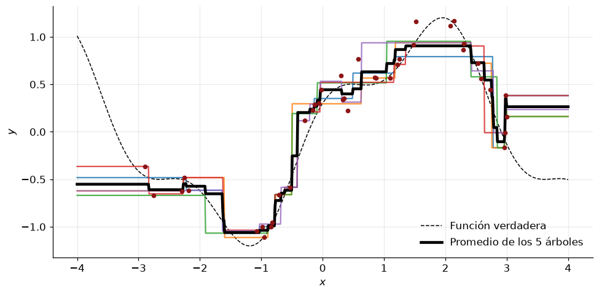
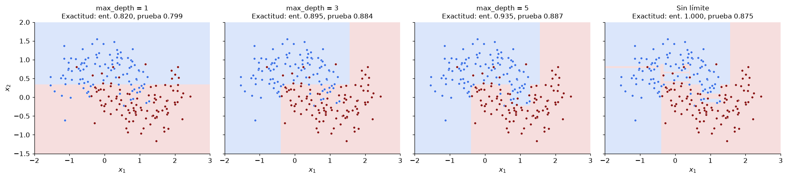

import numpy as np
import matplotlib.pyplot as plt
from sklearn.datasets import make_moons
from sklearn.model_selection import KFold, cross_val_score
from sklearn.tree import DecisionTreeClassifier, DecisionTreeRegressor, export_text, plot_tree
plt.rcParams.update({"figure.figsize": (8, 4), "axes.grid": True, "grid.alpha": 0.25,
"axes.spines.top": False, "axes.spines.right": False,
"font.size": 11, "legend.frameon": False, "figure.dpi": 110})
np.set_printoptions(precision=4, suppress=True)
ROJO, AZUL, VERDE, NARANJA, GRIS = "#8c1515", "#3C72E8", "#006400", "#E85C3C", "#4d4d4d"
rng = np.random.default_rng(852)Árboles de decisión: un ejemplo simple

Cuaderno de acompañamiento del apunte Árboles de decisión de la clase 6.
Ajustamos árboles de regresión a una función de una variable con ruido, la misma que se usa en el ejemplo de procesos gaussianos, y estudiamos cómo cambia el ajuste con los hiperparámetros. Al final repetimos lo mismo en un problema de clasificación con dos variables.
Contenido:
- Datos.
- Un solo corte.
- Efecto de la profundidad y del tamaño mínimo de las hojas.
- Lectura del árbol como reglas.
- Elección de la complejidad por poda y validación cruzada.
- Inestabilidad.
- Clasificación en dos dimensiones.
1. Datos
La función verdadera es \(f(x) = \sin x + 0{,}3\cos 3x\). Observamos 40 puntos en \([-3, 3]\) con ruido gaussiano de desviación estándar 0,15, y evaluamos los modelos en una grilla que se extiende a \([-4, 4]\) para ver cómo extrapola el árbol.
def f(x):
return np.sin(x) + 0.3 * np.cos(3 * x)
n = 40
X_train = np.sort(rng.uniform(-3, 3, n))[:, None]
y_train = f(X_train[:, 0]) + 0.15 * rng.standard_normal(n)
X_test = np.linspace(-4, 4, 800)[:, None]
plt.figure()
plt.plot(X_test[:, 0], f(X_test[:, 0]), "k--", label="Función verdadera")
plt.plot(X_train[:, 0], y_train, "o", color=ROJO, label="Observaciones")
plt.xlabel("$x$"); plt.ylabel("$y$")
plt.legend()
plt.tight_layout()
2. Un solo corte
Un árbol de profundidad 1 (un stump) divide la recta en dos intervalos y predice la media de \(y\) en cada uno. Para elegir el umbral \(t\) se prueban todos los puntos medios entre valores consecutivos de \(x\) y se elige el que minimiza la suma de cuadrados dentro de los dos hijos,
\[\mathrm{SC}(t) = \sum_{x_i \le t} (y_i - \bar y_L)^2 + \sum_{x_i > t} (y_i - \bar y_R)^2.\]
Calculamos esta curva a mano y la comparamos con el umbral que elige DecisionTreeRegressor.
x, yv = X_train[:, 0], y_train
umbrales = (x[:-1] + x[1:]) / 2 # x ya está ordenado
sc = []
for t in umbrales:
izq, der = yv[x <= t], yv[x > t]
sc.append(((izq - izq.mean()) ** 2).sum() + ((der - der.mean()) ** 2).sum())
sc = np.array(sc)
t_mano = umbrales[np.argmin(sc)]
stump = DecisionTreeRegressor(max_depth=1).fit(X_train, y_train)
print(f"Umbral calculado a mano: {t_mano:.4f}")
print(f"Umbral de scikit-learn: {stump.tree_.threshold[0]:.4f}")
fig, axs = plt.subplots(1, 2, figsize=(12, 4))
axs[0].plot(umbrales, sc, "o-", color=AZUL, ms=4)
axs[0].axvline(t_mano, color=ROJO, ls="--")
axs[0].set_xlabel("Umbral candidato $t$"); axs[0].set_ylabel("SC dentro de los hijos")
axs[0].set_title("Búsqueda del mejor corte")
axs[1].plot(X_test[:, 0], f(X_test[:, 0]), "k--", lw=1)
axs[1].plot(X_train[:, 0], y_train, "o", color=ROJO, ms=5)
axs[1].plot(X_test[:, 0], stump.predict(X_test), color=AZUL, lw=3, label="Árbol de profundidad 1")
axs[1].axvline(t_mano, color=GRIS, lw=1)
axs[1].set_xlabel("$x$"); axs[1].set_ylabel("$y$")
axs[1].legend(loc="lower right")
plt.tight_layout()Umbral calculado a mano: -0.4121
Umbral de scikit-learn: -0.4121
3. Efecto de la profundidad
La profundidad máxima (max_depth) controla cuántos cortes sucesivos puede hacer el árbol. Un árbol de profundidad \(d\) tiene a lo sumo \(2^d\) hojas. Con poca profundidad el ajuste es una escalera gruesa (sesgo alto). Sin límite, cada hoja contiene una sola observación y el árbol interpola el ruido (varianza alta). Fuera de \([-3, 3]\) la predicción es constante, igual a la media de la hoja del extremo.
profundidades = [1, 2, 3, 4, 6, None]
fig, axs = plt.subplots(2, 3, figsize=(15, 8), sharex=True, sharey=True)
for ax, d in zip(axs.flatten(), profundidades):
arbol = DecisionTreeRegressor(max_depth=d, random_state=0).fit(X_train, y_train)
ax.plot(X_test[:, 0], f(X_test[:, 0]), "k--", lw=1)
ax.plot(X_train[:, 0], y_train, "o", color=ROJO, ms=4)
ax.plot(X_test[:, 0], arbol.predict(X_test), color=AZUL, lw=2.5)
ecm = np.mean((arbol.predict(X_train) - y_train) ** 2)
nombre = "Sin límite" if d is None else f"max_depth = {d}"
ax.set_title(f"{nombre}: {arbol.get_n_leaves()} hojas, ECM ent. = {ecm:.3f}", fontsize=11)
ax.set_ylim(-2, 2)
for ax in axs[1]:
ax.set_xlabel("$x$")
for ax in axs[:, 0]:
ax.set_ylabel("$y$")
plt.tight_layout()
Tamaño mínimo de las hojas
Otra forma de limitar el árbol es exigir un número mínimo de observaciones en cada hoja (min_samples_leaf). Aquí dejamos crecer el árbol sin límite de profundidad. Hojas más grandes promedian más observaciones, y la función estimada es más estable y menos detallada.
tamanos = [1, 3, 6, 12]
fig, axs = plt.subplots(1, 4, figsize=(18, 4), sharey=True)
for ax, h in zip(axs, tamanos):
arbol = DecisionTreeRegressor(min_samples_leaf=h, random_state=0).fit(X_train, y_train)
ax.plot(X_test[:, 0], f(X_test[:, 0]), "k--", lw=1)
ax.plot(X_train[:, 0], y_train, "o", color=ROJO, ms=4)
ax.plot(X_test[:, 0], arbol.predict(X_test), color=AZUL, lw=2.5)
ax.set_title(f"min_samples_leaf = {h}: {arbol.get_n_leaves()} hojas", fontsize=11)
ax.set_xlabel("$x$"); ax.set_ylim(-2, 2)
axs[0].set_ylabel("$y$")
plt.tight_layout()
4. Lectura del árbol
Cada camino desde la raíz hasta una hoja es una regla. plot_tree dibuja el árbol y export_text lo escribe como texto. En cada nodo, squared_error es la varianza de \(y\) en el nodo, samples es el número de observaciones y value es la media de \(y\), que es la predicción si el nodo fuera una hoja.
arbol2 = DecisionTreeRegressor(max_depth=2, random_state=0).fit(X_train, y_train)
plt.figure(figsize=(12, 5))
plot_tree(arbol2, feature_names=["x"], filled=True, rounded=True, precision=2, fontsize=11)
plt.show()
print(export_text(arbol2, feature_names=["x"], decimals=2))
|--- x <= -0.41
| |--- x <= -1.63
| | |--- value: [-0.55]
| |--- x > -1.63
| | |--- value: [-0.91]
|--- x > -0.41
| |--- x <= 2.84
| | |--- value: [0.61]
| |--- x > 2.84
| | |--- value: [0.09]
5. Elección de la complejidad
La profundidad que mejor predice no se puede elegir con el error de entrenamiento, que siempre baja al agregar cortes. Usamos poda por costo-complejidad. Para cada \(\alpha \ge 0\) se busca el subárbol \(T\) que minimiza
\[C_\alpha(T) = \sum_{m=1}^{|T|} \mathrm{SC}_m + \alpha\,|T|,\]
donde \(\mathrm{SC}_m\) es la suma de cuadrados de la hoja \(m\) y \(|T|\) es el número de hojas. cost_complexity_pruning_path entrega la sucesión de valores de \(\alpha\) en que cambia el subárbol óptimo (scikit-learn divide el criterio por \(n\), así que su \(\alpha\) está en esa escala), y elegimos \(\alpha\) por validación cruzada con 5 pliegues. Los pliegues se forman al azar (shuffle=True); como X_train está ordenado, pliegues contiguos dejarían cada intervalo de validación fuera del rango de los datos de entrenamiento.
Con sólo 40 observaciones el error de validación cruzada es ruidoso y casi plano para árboles grandes. Por eso, además del mínimo, aplicamos la regla de un error estándar, que elige el árbol más pequeño cuyo error está a menos de un error estándar del mínimo.
camino = DecisionTreeRegressor(random_state=0).cost_complexity_pruning_path(X_train, y_train)
alfas = camino.ccp_alphas[:-1] # el último valor deja sólo la raíz
pliegues = KFold(5, shuffle=True, random_state=0)
ecm_cv, ee_cv, hojas, ecm_ent = [], [], [], []
for a in alfas:
arbol = DecisionTreeRegressor(ccp_alpha=a, random_state=0)
ecm = -cross_val_score(arbol, X_train, y_train, cv=pliegues,
scoring="neg_mean_squared_error")
ecm_cv.append(ecm.mean())
ee_cv.append(ecm.std(ddof=1) / np.sqrt(len(ecm)))
arbol.fit(X_train, y_train)
hojas.append(arbol.get_n_leaves())
ecm_ent.append(np.mean((arbol.predict(X_train) - y_train) ** 2))
ecm_cv, ee_cv, hojas = np.array(ecm_cv), np.array(ee_cv), np.array(hojas)
k_min = np.argmin(ecm_cv)
k = np.max(np.where(ecm_cv <= ecm_cv[k_min] + ee_cv[k_min])[0]) # regla de un error estándar
print(f"Mínimo de validación cruzada: {hojas[k_min]} hojas")
print(f"Regla de un error estándar: alfa = {alfas[k]:.5f}, {hojas[k]} hojas")
podado = DecisionTreeRegressor(ccp_alpha=alfas[k], random_state=0).fit(X_train, y_train)
fig, axs = plt.subplots(1, 2, figsize=(13, 4))
axs[0].plot(hojas, ecm_ent, "o-", color=AZUL, ms=4, label="Entrenamiento")
axs[0].plot(hojas, ecm_cv, "o-", color=ROJO, ms=4, label="Validación cruzada")
axs[0].fill_between(hojas, ecm_cv - ee_cv, ecm_cv + ee_cv, color=ROJO, alpha=0.15, lw=0)
axs[0].scatter([hojas[k]], [ecm_cv[k]], s=120, facecolor="none", edgecolor=ROJO, lw=2)
axs[0].set_xlabel("Número de hojas"); axs[0].set_ylabel("ECM")
axs[0].legend()
axs[1].plot(X_test[:, 0], f(X_test[:, 0]), "k--", lw=1, label="Función verdadera")
axs[1].plot(X_train[:, 0], y_train, "o", color=ROJO, ms=4)
axs[1].plot(X_test[:, 0], podado.predict(X_test), color=AZUL, lw=2.5,
label=f"Árbol podado ({podado.get_n_leaves()} hojas)")
axs[1].set_xlabel("$x$"); axs[1].set_ylabel("$y$")
axs[1].legend(loc="lower right")
plt.tight_layout()Mínimo de validación cruzada: 28 hojas
Regla de un error estándar: alfa = 0.00324, 8 hojas
6. Inestabilidad
Ajustamos el mismo árbol de profundidad 4 a cinco remuestras bootstrap de los datos, es decir, a cinco muestras de tamaño 40 extraídas con reemplazo de las observaciones originales. Los umbrales y los escalones cambian de una remuestra a otra. Esta varianza alta es la que reducen los ensambles de árboles (bagging y random forest), que promedian muchos árboles como estos.
plt.figure(figsize=(9, 4.5))
plt.plot(X_test[:, 0], f(X_test[:, 0]), "k--", lw=1, label="Función verdadera")
predicciones = []
for b in range(5):
idx = rng.integers(0, n, n)
arbol = DecisionTreeRegressor(max_depth=4, random_state=0).fit(X_train[idx], y_train[idx])
predicciones.append(arbol.predict(X_test))
plt.plot(X_test[:, 0], predicciones[-1], lw=1.5, alpha=0.8)
plt.plot(X_test[:, 0], np.mean(predicciones, axis=0), color="k", lw=3,
label="Promedio de los 5 árboles")
plt.plot(X_train[:, 0], y_train, "o", color=ROJO, ms=4)
plt.xlabel("$x$"); plt.ylabel("$y$")
plt.legend(loc="lower right")
plt.tight_layout()
7. Clasificación en dos dimensiones
En clasificación cada hoja predice la clase mayoritaria y los cortes se eligen para reducir la impureza de Gini, \(Q = 1 - \sum_k \hat p_k^2\). Las regiones de decisión son rectángulos con lados paralelos a los ejes. Usamos el conjunto make_moons, con dos clases en forma de media luna, y medimos la exactitud en una muestra de prueba independiente.
Xc_train, yc_train = make_moons(n_samples=200, noise=0.3, random_state=0)
Xc_test, yc_test = make_moons(n_samples=2000, noise=0.3, random_state=1)
gx, gy = np.meshgrid(np.linspace(-2, 3, 400), np.linspace(-1.5, 2, 400))
grilla = np.column_stack([gx.ravel(), gy.ravel()])
fig, axs = plt.subplots(1, 4, figsize=(18, 4.2), sharey=True)
for ax, d in zip(axs, [1, 3, 5, None]):
arbol = DecisionTreeClassifier(max_depth=d, random_state=0).fit(Xc_train, yc_train)
z = arbol.predict(grilla).reshape(gx.shape)
ax.contourf(gx, gy, z, levels=[-0.5, 0.5, 1.5], colors=["#dbe6fb", "#f6dede"])
ax.scatter(*Xc_train[yc_train == 0].T, s=15, color=AZUL, edgecolor="white", lw=0.4)
ax.scatter(*Xc_train[yc_train == 1].T, s=15, color=ROJO, edgecolor="white", lw=0.4)
nombre = "Sin límite" if d is None else f"max_depth = {d}"
ax.set_title(f"{nombre}\nExactitud: ent. {arbol.score(Xc_train, yc_train):.3f}, "
f"prueba {arbol.score(Xc_test, yc_test):.3f}", fontsize=11)
ax.set_xlabel("$x_1$"); ax.grid(False)
axs[0].set_ylabel("$x_2$")
plt.tight_layout()
El árbol sin límite clasifica perfectamente los datos de entrenamiento con regiones muy fragmentadas, y su exactitud de prueba es menor que la de los árboles de profundidad intermedia.
Ejercicios
- Cambie el ruido de los datos de regresión de 0,15 a 0,4 y repita la sección 5. ¿Cómo cambia el número de hojas elegido por validación cruzada?
- Aumente el número de observaciones de 40 a 400. ¿Qué ocurre con la diferencia entre el árbol sin límite y el árbol podado?
- En la sección 7, elija
max_depthpor validación cruzada concross_val_scorey compare la exactitud de prueba del árbol elegido con la de los árboles de la figura. - Reemplace \(x\) por \(e^x\) en los datos de regresión, ajuste el árbol de profundidad 2 y compare las hojas con las de la sección 4. ¿Por qué la partición de los datos no cambia?